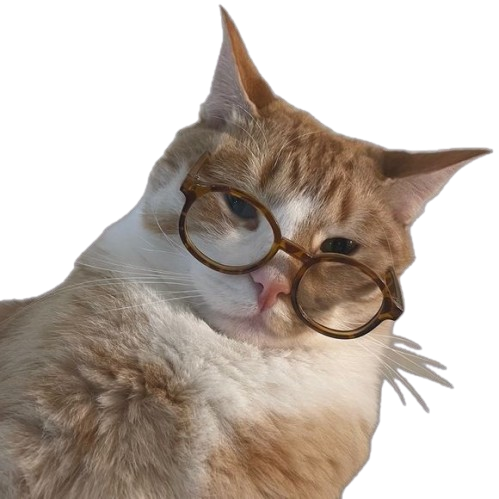

& VISIBILITY✳
What Does It Mean to Be Heard?
On youth, visibility and the difference between speaking and being heard.
READ ARTICLE ↗Curious minds. Thoughtful voices.
An independent journal for young people who want to explore ideas, question assumptions and take part in the conversations of their time.

THE READING ROOM
ESSAYS · OPINION · CULTURE · SOCIETY
On youth, visibility and the difference between speaking and being heard.
READ ARTICLE ↗On identity, everyday habits and the things we inherit without noticing.
READ ARTICLE ↗On disagreement, evidence and the responsibility of defending a position.
READ ARTICLE ↗ISSUE Nº 001 · EDITORIAL DESK ESSAYS
WHY WE EXIST
Youth & Society was created to make editorial room for young people who want to think beyond the immediate. We publish curious ideas, considered arguments and perspectives that deserve to be taken seriously.
MEET THE JOURNAL ↗THE DESK IS OPEN
We welcome essays, opinion pieces, cultural analysis, research and perspectives on social and international affairs. Read the guidelines before sending your work.
GUIDELINES & SUBMISSIONS ↗